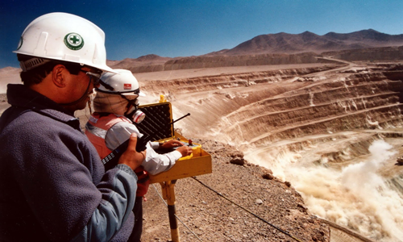
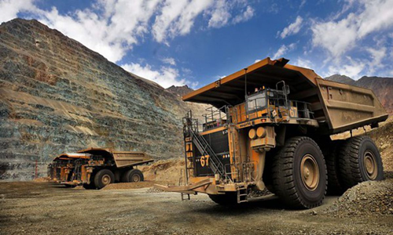
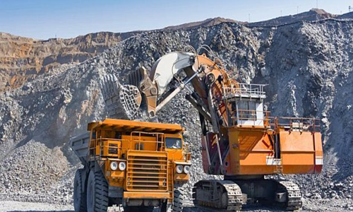

Las actividades en Cajamaraca 2017
Cajamarca, fundada como «San Antonio de Cajamarca», es la ciudad más importante de la sierra norte del Perú, capital de la provincia y del departamento de Cajamarca. Está situada a 2750 msnm en la margen este de la cadena oriental de la Cordillera de los Andes, en el valle interandino que forman los ríos Mashcon y Chonta. Es una ciudad en constante crecimiento poblacional, con la posibilidad de crear en el futuro un área metropolitana conformada por las ciudades de Cajamarca y Baños del Inca y la anexión de algunos pueblos y villas próximas al casco urbano.
Atractivos turísticos en Cajamarca
Cajamarca es una tierra donde la historia se une a la naturaleza para crear una experiencia inolvidable. Encuentra en esta región una magnífica arquitectura colonial, pueblos coloridos y una gastronomía digna de admirar. Relájate en los Baños del Inca, admira el Complejo Arqueológico de Cumbemayo y diviértete en sus carnavales llenos de vida y color. ¡Definitivamente aquí lo pasarás bien!
La Ganaderia en Cajamarca
Cajamarca, departamento de la Sierra Norte del País, cuenta con el privilegio de compartir diferentes pisos ecológicos con hermosos valles, laderas fértiles, jalcas promisorias y ambientes tropicales de selva alta y baja. Esta diversidad ecológica permitió que en toda su extensión se instalaran centros de cría de ganado lechero, con predominancia de razas de alta producción como la Holstein y Brown Swiss en los valles, y cruces de éstas en las zonas más altas, por lo que los niveles de producción son variados.
La Mineria en Cajamarac
La gran minería en Cajamarca difunde la idea de que el “desarrollo minero y el desarrollo económico y social son inseparables” y que la incorporación en las nuevas leyes de los “asuntos sociales, ambientales y económicos dentro de las actividades que desarrolla” da como resultado que las actividades mineras“se realicen dentro del marco de desarrollo sostenible”. [


